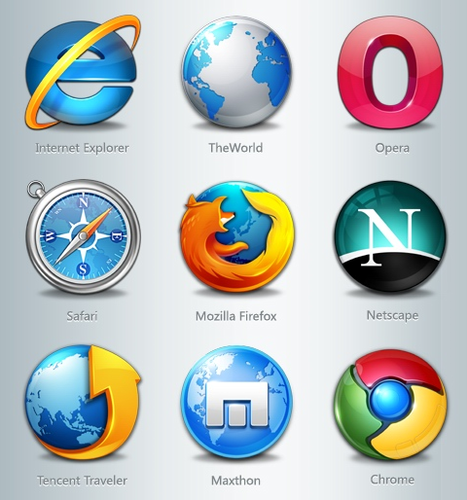

Internet, Society and Design Justice?
By Diane Bada | 3 June, 2022

Web, Society, and Design Justice
Our political, economic, cultural, and social connections have all been affected by technology advancements. We shape the internet through how we engage with it, and the internet, in turn, influences our environments. Because it has links with technologies and the media, the information we acquire on the internet then controls our daily actions and how we think (Orgad, 2007:34). Is that why there are still racist, queerphobic and sexist comments being said in 2022 because the internet is polluted by injustices, and inequality? I’ll be taking a look at the positive and negative aspects brought around by the internet within our society, as well as defining Design Justice and what it entails.
The Internet is a worldwide network that facilitates wireless connections and communications (Orgad, 2007). People can access any information they desire from politics, academics, health care, and so on via the Internet, a global network that is responsible for wireless connections and communications. This information is easily accessible by going online, which includes connecting to the internet and browsing and searching for information on the Web, using computers or cell phones. It’s no lie that the internet has really improved several areas of our lives, such as the ability to perform activities at the comfort of your own bed. The method of sharing news at a broader level and faster way. In addition, the internet has also given people more access to information in several fields such as academia, business and socially. My favourite part is being able to message my sister, who occupies the room next door, to fetch me something from her room. It’s way better than screaming across the house and hurting my vocal cords.
Unfortunately, not everyone has the luxury of using the internet and for me, that’s just sad thinking about the ways some people are denied the benefits of using the internet. The internet is not evenly distributed as only 59% of the world population actually has internet access, with the global north being the majority in accessing and contributing to the internet (Graham, et al, 2015). The other 41% without the internet will remain left out and underrepresented or not represented at all. This is a cause for concern because all existing societal inequalities will only increase and reflected in the digital environment (Graham, et al, 2015).
However, in some cases people denied of the internet access don’t have to worry about the negatives that come with using the internet. Because the internet is such a vast space that includes people’s personal details, it has increased the number of criminals online. Hundreds of scams happen every day because people are always on the internet. Some of them are really concealed and you won’t find out immediately, but others are quick, example getting the details from your credit or debit cards and using them to purchase something. Not only is it a place for criminals, but also a place for bullies and judgemental individuals. It’s no news that a lot of suicides that have happened relating to children, is due to cyber-bullying. The internet is a harmful place, especially when one interacts with individuals who set out to hurt other people. Besides, the fraud and the bullying, “the internet is a scam”, is a phrase well-used by the millennials today. This phrase comes from the fact that not everything that is shown on the internet is true. This comes from social media platforms that show people enjoying their luxurious lives and living in gold. It’s fascinating how, once the internet is stripped from them, they aren’t really who they perceive themselves to be.
As one can see, internet access doesn’t always mean a good thing and a solution for everything. Because of all the way it provides conveniences to us people, we often overlook the shortcomings that come with the internet, such as lack of representation and unfair data. Who do we blame for that? People who contribute to the internet. This is where design justice comes into play. Most contributors of the internet are made up of certain demographics and backgrounds, in turn marginalizing other demographics and people of different backgrounds (Graham, et al, 2015). That is why design justice is so important. When I first came across this word, I wasn’t really sure how it implied to the web and what its significance was. That is why I broke it down into two words, design, and justice.
Design usually deals with planning a concept for something. In terms of the web, this can be for designing the wireframes, presentation and etc. Justice, in my head equates with fairness. Combined with design, means planning out the different aspects of a product, in this case, the web, to achieve a product suitable for all types of people, regardless of the disadvantages individuals might face. Disadvantaged group would be groups of people under the inequalities brought about by colonialism and capitalism. Design justice allows for people’s voices to be heard, and disintegrates unfairness, bias and judgment (Costanza-Chock, 2020).
As a black female, I’m constantly reminded that the system that I grew up was not built for my race, it’s a constant game of catch up and proving to work harder than the other races. It’s the same for the digital space that we have right now, the internet was made by the Americans, and we are all aware the different challenges that people of colour face especially when it comes to the Americans. However, this thing built by them, is now used by anyone who can afford to have access to it, irrespective of colour, background, sex and anything else that differentiates people. We live in a world where the marginalised are slowly but surely raising the voices so that they can be heard. This is why the internet needs a diverse group of contributors, so every person belonging to a certain group can be heard and catered for. One of the principles for the Design Justice Network is, “sustain, heal, and empower our communities as well as to seek liberation from exploitive and oppressive systems”. I previously mentioned that the internet shapes our lives, hence in order to see the change we need to see, the digital space needs to change as well, it needs to progress and deviate from its past of underrepresentation certain groups.
Conclusion
It’s fair to say that inequality and oppression can happen anywhere at any time, it’s the sort of reality we live in. It’s also fair to say that people usually do things, do or say things that are natural to them. An example would be internet contributors contributing based on what they know and what they’ve been exposed to. You can’t ask a white man to cater for black people’s struggles, if they’re not really sure what these struggles are exactly. The internet needs the perspective of more people, different people, a diverse perspective. Each voice that comes with its problems and solutions, in turn provides the internet with more data. The more data that is obtained, the less bias an algorithm can become. So, it is our job as internet contributors, creators and users to be mindful and considerate of the larger audience. The more we are mindful and considerate of people who are not like “us”, the more groups that can eventually be represented and the closer we are to reaching equality within the digital space.
References
COSTANZA-CHOCK, S. 2020. Plan Justice: Community-Led Practices to Build the World We Need. London: The MIT Press.
ORGAD, S. 2007. The Internet as an ethical space: the tradition of Roger Silverstone. New media and Society 19(1): pp.33-41.
Birhane, A. Cummins, F 'Algorithmic Injustices: Towards a Relational Ethics' 2019 doi: arXiv:1912.07376 [cs.CY].
Graham, et al. 'Towards a study of information geographies: (im)mutable augmentations and a mapping of the geographies of information,' Geo: Geography and Environment, 2(1), 2015. pp. 88-105. doi: 10.1002/geo2.8.